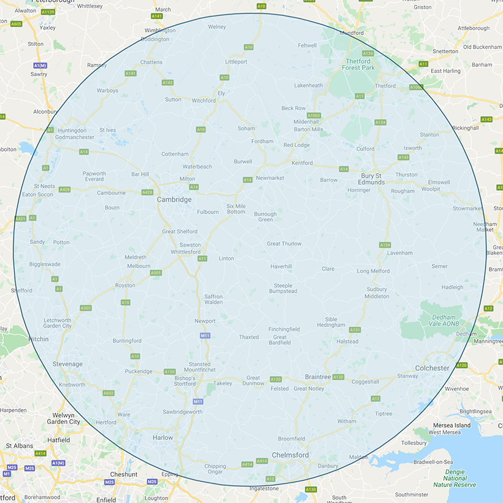

We cover a 30 mile / 60 minute radius from Haverhill
Including...
- Biggleswade
- Bishops Stortford
- Braintree
- Burwell
- Bury St Edmunds
- Cambridge
- Clare
- Colchester
- Elmswell
- Ely
- Finchingfield
- Great Yeldham
- Hadleigh
- Halstead
- Haverhill
- Huntingdon
- Ixworth
- Lakenheath
- Linton
- Long Melford
- Mildenhall
- Newmarket
- Soham
- Stowmarket
- St Neots
- Sudbury
- Sutton

If you cannot see your town or village, please contact us and we will be happy to assist with your enquiry.